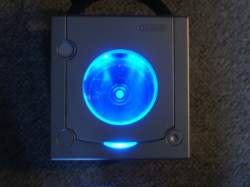
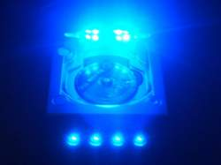
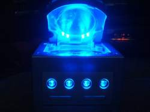
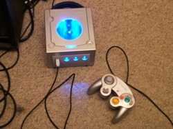

Added: 07.06.2005
Category:
Game Consoles
Owner: Orbital
Country:  United Kingdom United Kingdom
.: All mods by owner... | Story:
The gamecube has a window in the top, cut with a 3inch whole saw, then 4 ultra bright leds shining through the back, then the controller ports have 2 ultra bright leds shining from above and below along with a blue status led. im only 15 so please dont be all negative about my mod, also the machine is going on sale on ebay very soon u can check if ur interested my ebay (as in u ad me in ur favourties) til it goes up. o yea, i took photography as a GCSE so i sorta turned into a perfectionist with my photos :p cheers, ben.
|
Click the thumbnails for larger images.




!RULES!
1. Only comments please. More technical questions etc. should be directed to MetkuMods forums.
2. Using vulgar or abusive language, cursing or swearing is prohibited! Lets try to keep this clean.
3. Comments in ENGLISH and FINNISH ONLY! Anything else will be deleted.
4. Unique or not, I like to see the mod. "Seen that" etc. posts will be deleted.
5. Comments that comment about other comments will get com... deleted!
People like different things so lets keep the comments professional and if possbile encouraging. That doesn't mean that you shouldn't tell what you really feel about the mod but usually that means more than one word.
|
| Orbital | 08.10.2006 04:14 |
| just make sure the light shines more out of the port hole, so it can catch the shiny GC shell(well matt finish but if its silver colour then it can reflect strong light) |
| kin | 12.03.2006 12:26 |
| great job. i still cant figure out how to get light through the controller ports (especially the extra rings around them) |
| Orbital | 05.09.2005 20:31 |
| sorry i cant because i have sold the GC. go on duey2k.com or something like that (i think site is shortly closed). |
| krl | 11.08.2005 06:39 |
| can you post a pic of how you mouted the leds so that they would light up those controller ports? |
| Big Tez | 10.08.2005 17:43 |
| this is the ducks nuts! |
| Orbital | 16.07.2005 02:26 |
| the 12v power supply- use google to find out where it is. and i used 5mm 4000mcd leds some grinded |
| Alex | 15.07.2005 19:04 |
| What type of LED's did you use and where did you run them from on the board? |
| Orbital | 01.07.2005 22:16 |
| the item sold for £56. there was 334 visitors but only 4 bidders and 10 bids. pretty shit but seeing as i bought it for £20. |
| Ge | 23.06.2005 22:46 |
Very cool! Ive done something similar, also controller port leds but mine arent as bright. Only 1x10000mcd per port. I just finished installing a bright red led in the power button (I have an ICE colored semi-transparant case) which now looks very neat too.
Very nice tho, and good luck selling it!
(check www.teamxecuter.com for the REAL gamecube case :D) (not my site or anything) |
| Blixten100 | 23.06.2005 16:46 |
| Extremly sweet! I have an xbox that is quite like your GC... This mod was wery clean and no crappy driled holes around the controller ports, like most people have. 4/5 |
| Orbital | 18.06.2005 02:09 |
| cheers, its not actually as bright as it looks in the pictures-but it is as gd and cool as it looks-coz i used no flash its more exposed- so ur eyes(if u like u can say theres a faster shutter speed with ur eyes) doesnt see it as bright as the pics. im trying to sell it on ebay, i think this type of mod could look cool on a xbox- thats what i did to mine until the hdd randomly died. |
| drew | 16.06.2005 00:17 |
| im only 14 and im workin on some mods on my xbox i realy like ur gamecube. |
| Orbital | 09.06.2005 13:18 |
| i might take some shots of it in daylight and repost it? do uthink i should, i dont have a problem doing that. |
| _make_ | 09.06.2005 12:46 |
Very Nice
4½ / 5 |
| slickness | 09.06.2005 07:34 |
| Not bad, the led on the control ports are more impressive to me. I wish you had a day light shot tho, all nite shots arent so speical. But good work, for age 15 you're doing well =P. |
| Kris | 08.06.2005 05:36 |
| awesome, that's something like what i'm am going to do with my xbox....gotta go with blue! |
| N5 | 08.06.2005 05:17 |
| probably the best, cleanest gamecube mod i've seen. 5 |
| ZERO | 08.06.2005 01:28 |
would be nice if there was a dimmer on the thing lol
I think that for an upgrade to the project you should make the leds where the cd is flash for the drives activity. |
| dcmodder | 07.06.2005 22:37 |
| i'll bet you need sunglasses to play it. good thing i got mine right here B-) lol good mod. |----*| that's my brightness scale 5/5 |
| ilumos | 07.06.2005 22:25 |
Nice mod! I bet it lights up the whole room and blinds you too. If I had the money I'd buy this just to gawp at.
Good work |
| Lib | 07.06.2005 22:12 |
wow thats, sooo fuking cool!!
|
| Orbital | 07.06.2005 21:54 |
| cheers dudes! most people moan about not being able to open the nintendo secuirity screws, i thought i was fun and funny trying to open them little bitchs, i was so close to makin it so there was no lip :P i thought the pics were wel cool alone lol there all taken without flash coz with flash it royaly sucks, and looks nothing like the real thing, these pics are only different a small amount, a lil white emitting area of the leds thats white in these pics are all wrd in these pics, in real life there just super bright and can get quite annoying after a while but its a pretty damn cool machine in the end in my opinion, im hoping to do this to another gamecube so if you maybe tell me what i could do in future:) |
| Rambooom | 07.06.2005 20:49 |
| This shit ruled:p Very nice job |
| *anonymous* | 07.06.2005 20:32 |
| VERY NICE! very clean! |
|
|
){kind=link}
){kind=link}
){kind=link}
){kind=link}